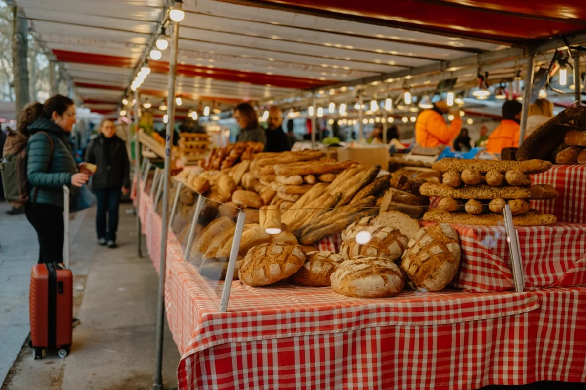
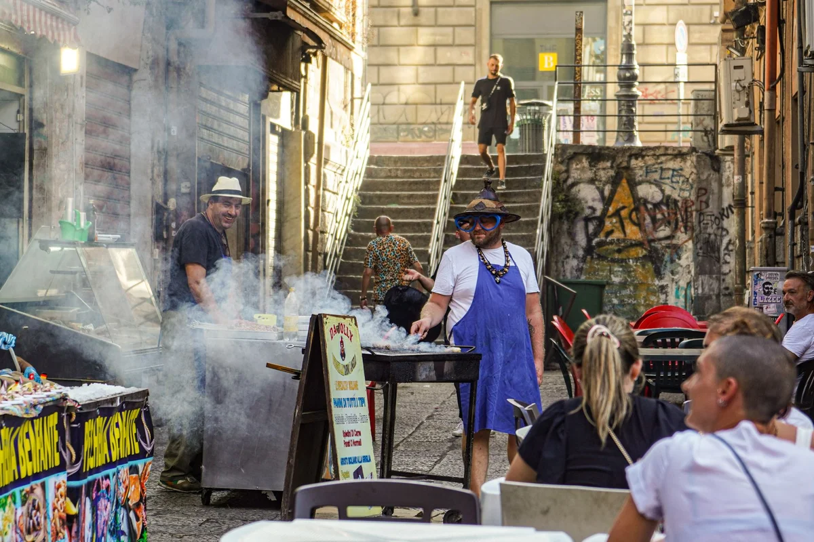

Introduction
Few dishes carry the weight of a city on their shoulders quite like sfincione. For anyone curious about sfincione Palermo street food history, the story begins not in a market stall or a family kitchen but behind the walls of a convent, somewhere in 17th-century Palermo, where nuns worked with leftover dough and transformed scarcity into something extraordinary.
Right now, sfincione is having a quiet but unmistakable renaissance. Younger Palermitan chefs are revisiting the recipe, food journalists have been championing it as one of Italy's most underrated street foods, and visitors to Sicily are increasingly seeking it out beyond the obvious tourist circuits. In a food world obsessed with sourdough and regional authenticity, sfincione feels urgently relevant.
What makes it so compelling is its layered identity. It is simultaneously a product of religious poverty, Arab culinary influence, Norman occupation, and the unruly creativity of Palermo's street vendors. A single square of sfincione is, in the most literal sense, a slice of the city's history. This article unpacks all of it.
What Sfincione Actually Is (And What It Is Not)
Visitors who arrive in Palermo expecting something like a Neapolitan pizza will be immediately disoriented. Sfincione is nothing like pizza. The dough is thick, soft, and deliberately spongy, closer in texture to a well-hydrated focaccia than anything thin or crisp. The name itself most likely derives from the Latin spongia, meaning sponge, and that texture is the point: it absorbs the toppings rather than just supporting them.
The canonical topping combination is very specific: slow-cooked sweet onions (often cooked down in anchovy oil until almost jammy), salted anchovies, a sharp semi-aged caciocavallo cheese, a simple tomato sauce made from crushed Sicilian tomatoes, and a final generous dusting of toasted breadcrumbs. That last element is not decorative. The breadcrumbs create a sandy, savoury crust that contrasts with the softness below and absorbs the juices from the onions and tomatoes as the sfincione sits.
It is worth being clear about what sfincione is not. It is not sfincione bianco, the white version popular in the Bagheria area just outside Palermo, which uses neither tomato nor anchovy. It is not a flatbread or a pizza al taglio. And it is emphatically not a dish meant to be eaten hot from the oven: many Palermitans insist the ideal sfincione is slightly cooled, even eaten at room temperature, which allows the flavours to settle and deepen.
The Convent Kitchen Origin: How Nuns Invented Palermo's Favourite Street Food
The most documented origin story places the birth of sfincione in the kitchens of the Monastero di San Vito, a convent in the Palermo neighbourhood of Bagheria, sometime in the 1600s. The nuns there were working within the strict dietary restrictions of Lent, when meat was forbidden and resources were scarce. Leftover bread dough, local cheeses, preserved fish, and garden onions were all available. The result was a filling, inexpensive dish that could feed many people from very little.
This is not a unique phenomenon in Sicilian culinary history. Many of the island's most iconic dishes, from pasta reale (marzipan) to elaborate cassata, were first developed or refined in Sicilian convents, where nuns had both the time and the creative necessity to innovate. What makes sfincione unusual is how completely it escaped the convent walls and became a street food of the people, rather than remaining an ecclesiastical speciality.
By the 18th century, sfincione had migrated from convent kitchens to home ovens in Palermo's working-class neighbourhoods. By the 19th century, it was being sold on the streets. The dish made this journey precisely because it was cheap to produce, substantial enough to replace a meal, and easy to carry and eat standing up. In a city where much of the population lived in extreme poverty, sfincione was not a luxury or a celebration food. It was Tuesday lunch.

The Arab-Norman Flavour Architecture Behind the Toppings
Here is the angle that most sfincione articles skip over entirely: the specific combination of toppings is not random, and it did not emerge from Italian culinary logic alone. It is a direct inheritance of the Arab-Norman period, when Palermo was one of the most cosmopolitan cities in the Mediterranean world.
The Arab presence in Sicily between the 9th and 11th centuries introduced the flavour principle of agrodolce (sweet and sour) and the culinary habit of combining savoury preserved fish with sweet alliums. The slow-cooked onions in sfincione, often almost caramelised, sweetened with a touch of the anchovy oil and balanced by the sharp cheese, are a textbook expression of this flavour logic. So is the use of breadcrumbs as a textural and flavour-absorbing element, a technique common in North African and Arab-influenced Sicilian cooking.
The Norman contribution is equally legible. The cheese, typically caciocavallo, is a pasta filata cheese that arrived in the south of Italy via Norman trade networks. Its sharp, slightly funky quality is what gives sfincione its savouriness and prevents the sweetness of the onions from dominating.
Then there are the anchovies: preserved, intensely umami, and deeply embedded in the Sicilian pantry since Phoenician and Roman times. The anchovies from Sciacca on Sicily's southern coast were historically among the most prized in the Mediterranean, and they remain the recommended choice for an authentic sfincione.
In short, every layer of sfincione tells a different chapter of Palermo's history. The dish is not just old. It is archaeologically complex.
Where to Eat Sfincione in Palermo: The Real Addresses
The most authentic sfincione experience in Palermo is not inside a restaurant. It is from one of the three historic street markets, sold directly from a vendor's tray or from the back of a three-wheeled Ape van known locally as a sfinciunaro. These vendors carry whole trays of sfincione, keep them warm with a cloth, and sell it by the slice, typically for between 1 and 2.50 euros depending on size.
- Mercato di Ballarò: Palermo's oldest and most viscerally alive market, operating since the Arab period of the 9th century. The sfincione vendors here are concentrated near the Piazza del Carmine end. Arrive before noon for the best selection. This is the single most important destination for anyone serious about Palermitan street food.
- Mercato della Vucciria: Less active as a food market than it once was, but still relevant in the evenings, when vendors set up near Piazza Caracciolo. The atmosphere here after dark is unlike anywhere else in Europe.
- Mercato del Capo: The most neighbourhood-oriented of the three main markets, running along Via Cappuccinelle and Via Porta Carini. The sfincione here tends to be slightly thicker and more generously topped than elsewhere, at least according to locals who have opinions about this.
For a sit-down version with high-quality ingredients and a more considered approach, Ferro di Cavallo near the Piazza Borsa area is a long-standing Palermitan institution that serves sfincione alongside a short menu of traditional Sicilian dishes. It is neither trendy nor expensive, which is precisely why it remains trustworthy.
A more recent addition to the conversation is Ke Palle in the Kalsa district, a small street food spot run by young Palermitans who take the city's street food canon seriously and serve sfincione alongside arancine and pane e panelle with real attention to sourcing.

The Sfinciunaro: A Vanishing Figure of Palermo's Streets
One of the most distinctive sounds in 20th-century Palermo was the cry of the sfinciunaro, the itinerant sfincione vendor who pushed or drove through working-class neighbourhoods calling out his wares. The traditional call was a drawn-out, almost operatic chant of "Caldo, caldo sfincione!" (hot, hot sfincione), though local variations existed in every neighbourhood.
At the peak of this tradition, in the mid-20th century, dozens of sfinciunari worked the streets of Palermo daily. They operated from converted three-wheeled Ape vans or pushed wooden carts with a charcoal warming tray underneath. Their routes were established over generations, their customers loyal to the point of waiting at the same corner at the same time every week.
Today, the sfinciunaro is a near-extinct figure. The combination of car traffic regulations, health and safety codes, and changing urban habits has reduced their number to a small handful who operate mostly around the historic markets. Preserving the sfinciunaro tradition is now considered a cultural priority by some Palermitan civic organisations, and there have been calls to establish an official registry of traditional street food vendors, similar to measures taken in other Italian cities to protect market culture.
If you do encounter a sfinciunaro during a visit, this is not a tourist performance. It is a genuine living remnant of a food culture that is several centuries old.
Sfincione vs Focaccia: Why the Comparison Gets the Dish Wrong
Food media frequently describes sfincione as "Sicilian focaccia" for the sake of a quick explanation, and while the comparison is not entirely wrong, it flattens something important.
Genoese focaccia, the most internationally known reference point, is defined by its olive oil richness, its relatively simple topping, and its golden, slightly crisp base. It is a refined, self-contained product. Sfincione is something wilder. The dough is softer and more hydrated, the topping is layered and complex, and the whole thing is designed to be slightly messy and deeply savoury rather than elegant.
The more useful comparison might actually be to Neapolitan pizza al taglio or to a very thick Turkish pide, in the sense that all three descend from the same broader Mediterranean tradition of leavened flatbread as a vehicle for cheap, abundant toppings. But sfincione's Sicilian flavour logic, that particular combination of sweet, salty, sharp, and crunchy, makes it unlike either.
Perhaps most importantly, focaccia is typically eaten fresh and hot. Sfincione is specifically designed to be consumed at room temperature or slightly warm. It is a dish built for carrying, sharing, and eating on the move. The focaccia comparison, useful as a starting point, ultimately undersells the singularity of what Palermo has produced.
Making Sfincione at Home: The Key Variables That Most Recipes Get Wrong
For those who want to make sfincione outside of Sicily, the most commonly available recipes produce a respectable result but frequently miss two critical details that make the difference between good and exceptional.
The first is the onion preparation. Most recipes instruct you to sauté the onions until soft. The correct approach is significantly longer: the onions should be cooked very slowly in olive oil and anchovy for at least 40 to 50 minutes, until they are completely collapsed, jammy, and almost translucent. This transforms the flavour from savoury and sharp to deeply sweet and complex. Rushing this step produces a sfincione that tastes competent but not alive.
The second is the resting time. After the sfincione comes out of the oven (typically baked at 200 to 220 degrees Celsius for 25 to 30 minutes), it should rest for a minimum of 20 minutes before cutting. During this time the breadcrumbs, which will have absorbed cooking juices, firm up slightly, and the entire topping layer settles into the dough. Cutting immediately produces a messy, structurally unstable result. Waiting produces a cohesive, sliceable, flavour-deepened sfincione.
The dough itself should be made with a high-hydration recipe, at least 70% hydration, and ideally left to prove slowly overnight in the refrigerator. The long cold ferment develops flavour in the dough that compensates for the absence of the Palermitan air and the Sicilian heritage wheat flour, such as tumminia or russello, that the best Palermitan versions use.
Finally: do not substitute caciocavallo with mozzarella. The moisture content of mozzarella will make the topping soggy. A young provolone piccante is an acceptable substitute; mild cheddar or gruyère are not.
Final Thoughts
Sfincione Palermitano is one of those rare dishes where the food and the city are genuinely inseparable. It did not just originate in Palermo; it was shaped by every wave of people who passed through, ruled, traded with, or simply lived in Palermo across four centuries. The nuns who first made it, the street vendors who democratised it, the Arab and Norman culinary traditions that gave it its flavour logic: all of them are present in every slice.
In a food landscape that increasingly rewards novelty and spectacle, there is something quietly radical about a dish that has remained essentially unchanged for 400 years and continues to be sold for less than two euros from a cart on a street corner. Palermo has never needed to market sfincione to the outside world. It has simply kept making it.
If this article changed how you think about Sicilian street food, or if you have a sfincione memory from Palermo that deserves to be shared, please pass it along to someone who would appreciate it.
Frequently Asked Questions
What is sfincione Palermitano made of?
Sfincione Palermitano is a thick, spongy focaccia-style bread topped with a combination of slow-cooked sweet onions (cooked in anchovy oil), salted anchovies, semi-aged caciocavallo cheese, a simple tomato sauce, and a generous layer of toasted breadcrumbs. The dough is highly hydrated and soft, designed to absorb the toppings rather than just support them.
Where did sfincione originate?
Sfincione originated in 17th-century Palermo, most likely in the kitchen of the Monastero di San Vito convent, where nuns created it as a filling, inexpensive Lenten dish using leftover bread dough, local cheese, preserved fish, and onions. Over the following centuries it moved from convent kitchens to home ovens to the street markets and carts of working-class Palermo.
Is sfincione the same as Sicilian pizza?
No. Although sfincione is sometimes loosely described as Sicilian pizza, it is a distinct dish with a different dough, a different topping logic, and a different eating tradition. Sfincione dough is softer and more hydrated than pizza dough, the toppings are layered and complex rather than simple, and the dish is specifically designed to be eaten at room temperature rather than hot from the oven.
Where is the best place to eat sfincione in Palermo?
The most authentic sfincione is found at Palermo's three historic street markets: the Mercato di Ballarò (the oldest and most vibrant, near Piazza del Carmine), the Mercato della Vucciria, and the Mercato del Capo. Sfincione is sold by street vendors called sfinciunari from trays or three-wheeled Ape vans, typically for between 1 and 2.50 euros per slice. For a sit-down option, Ferro di Cavallo near Piazza Borsa is a long-trusted traditional address.
What does sfincione taste like?
Sfincione has a complex, layered flavour profile: sweet from the slow-cooked onions, intensely savoury and umami from the anchovies and caciocavallo cheese, acidic from the tomato sauce, and textured with a sandy, savoury crunch from the toasted breadcrumbs. The dough itself is soft and slightly chewy. The overall effect is rich, filling, and deeply satisfying in a way that is very different from pizza or focaccia.
Can you make sfincione at home outside Sicily?
Yes, but two details make the most difference: the onions must be cooked very slowly for 40 to 50 minutes until completely jammy and sweet, and the finished sfincione must rest for at least 20 minutes after baking before cutting. The dough should be high-hydration (at least 70%) and ideally cold-fermented overnight. Caciocavallo should not be substituted with mozzarella due to its high moisture content; a young provolone piccante works as an alternative.